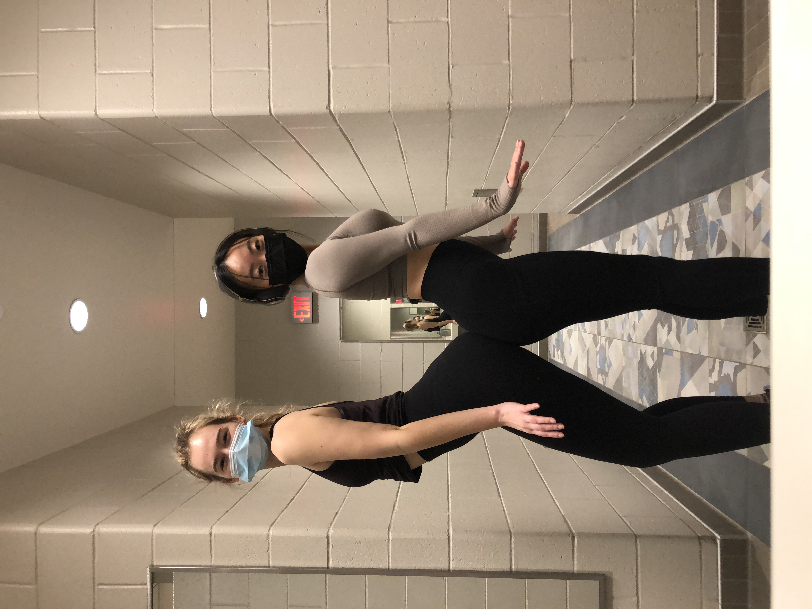
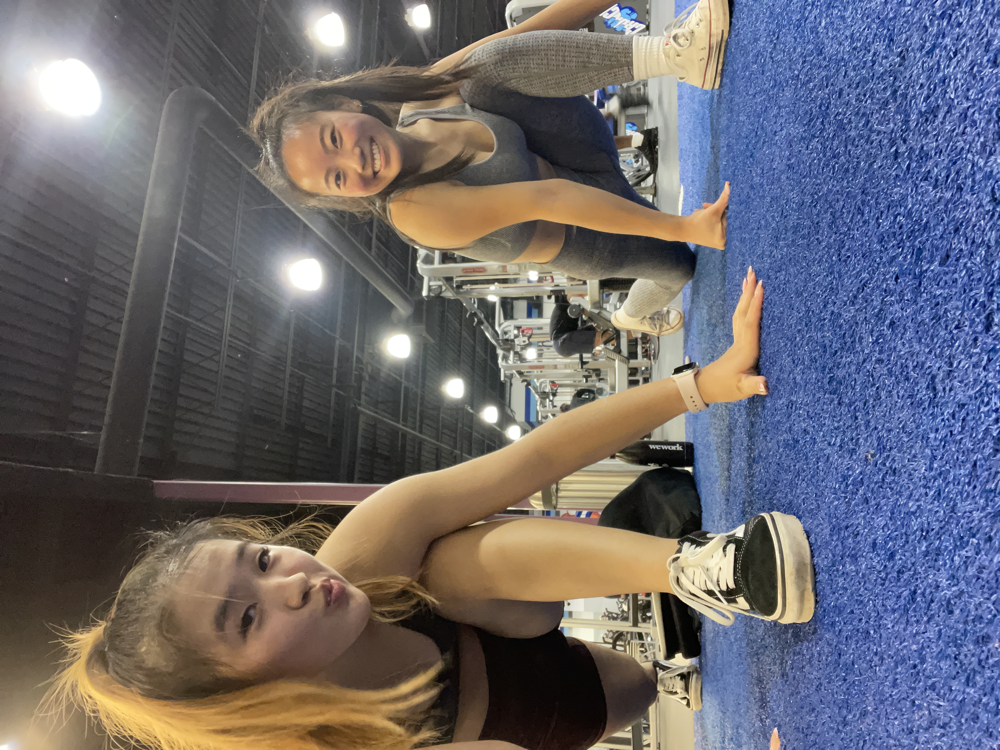
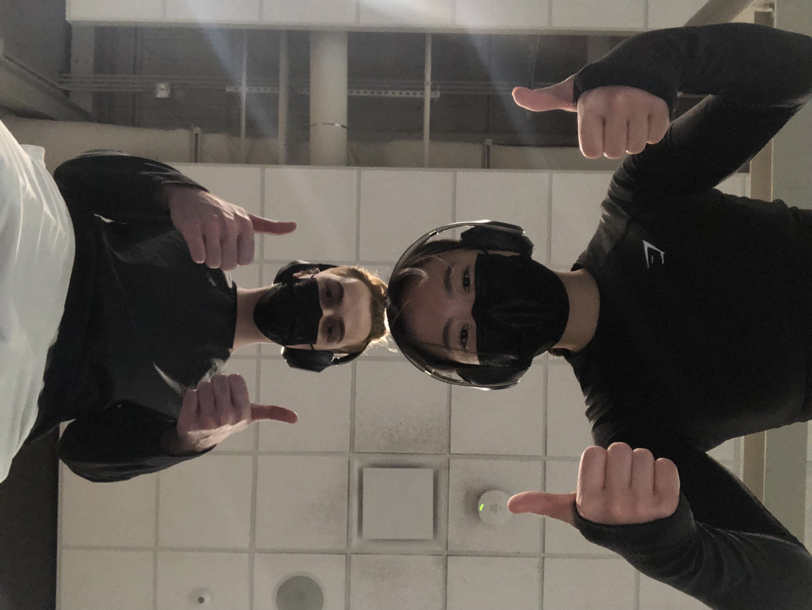
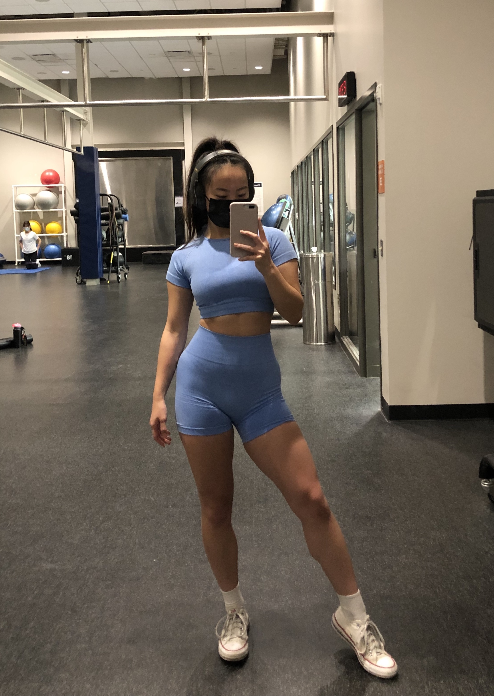
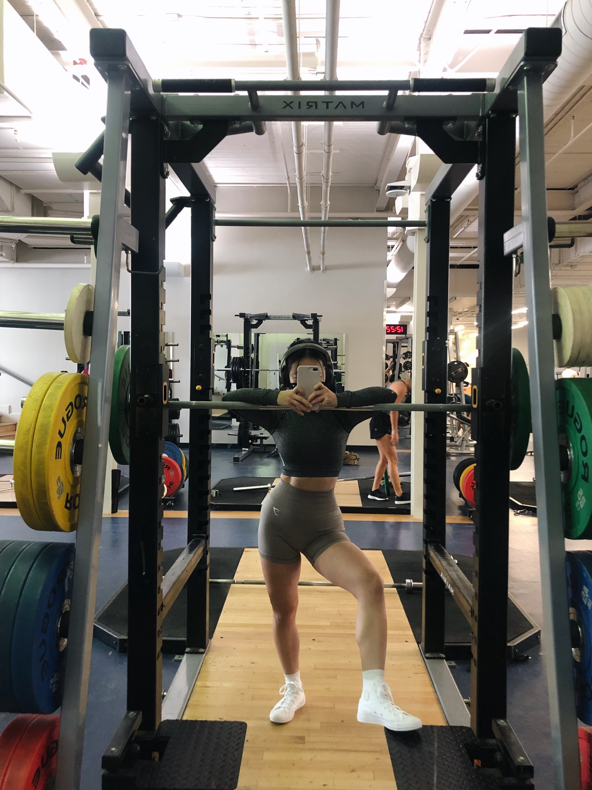
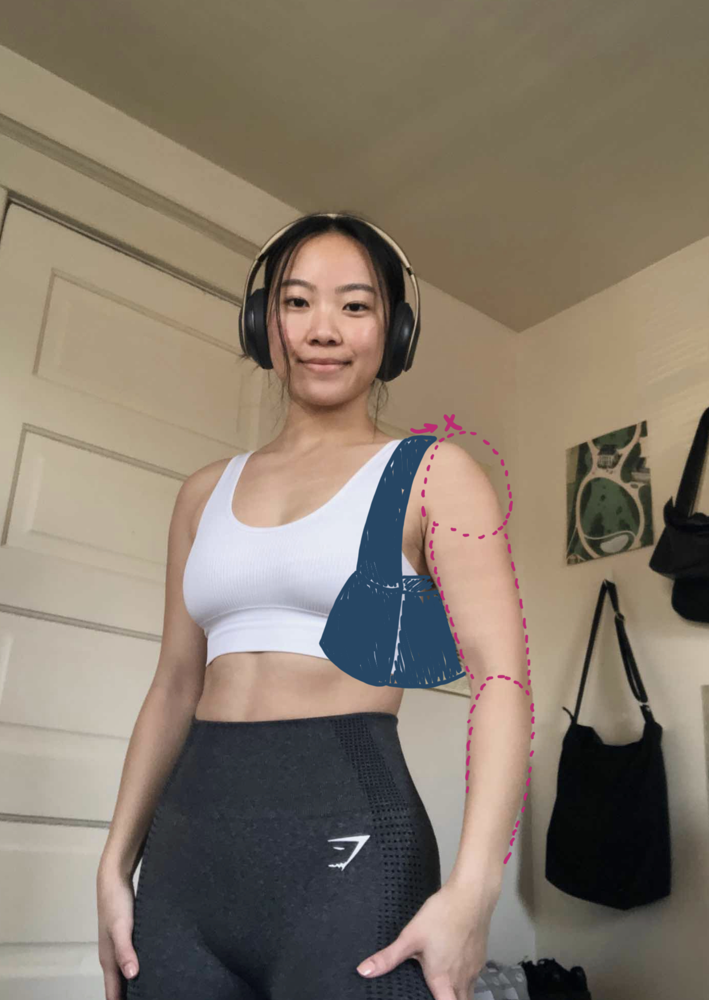
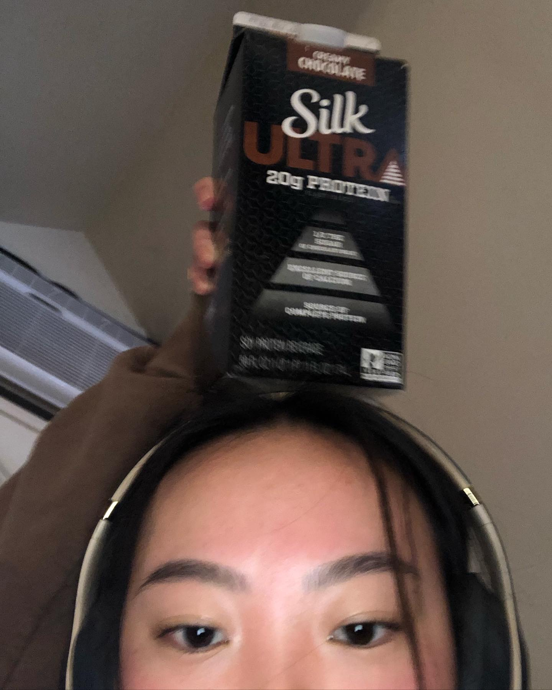
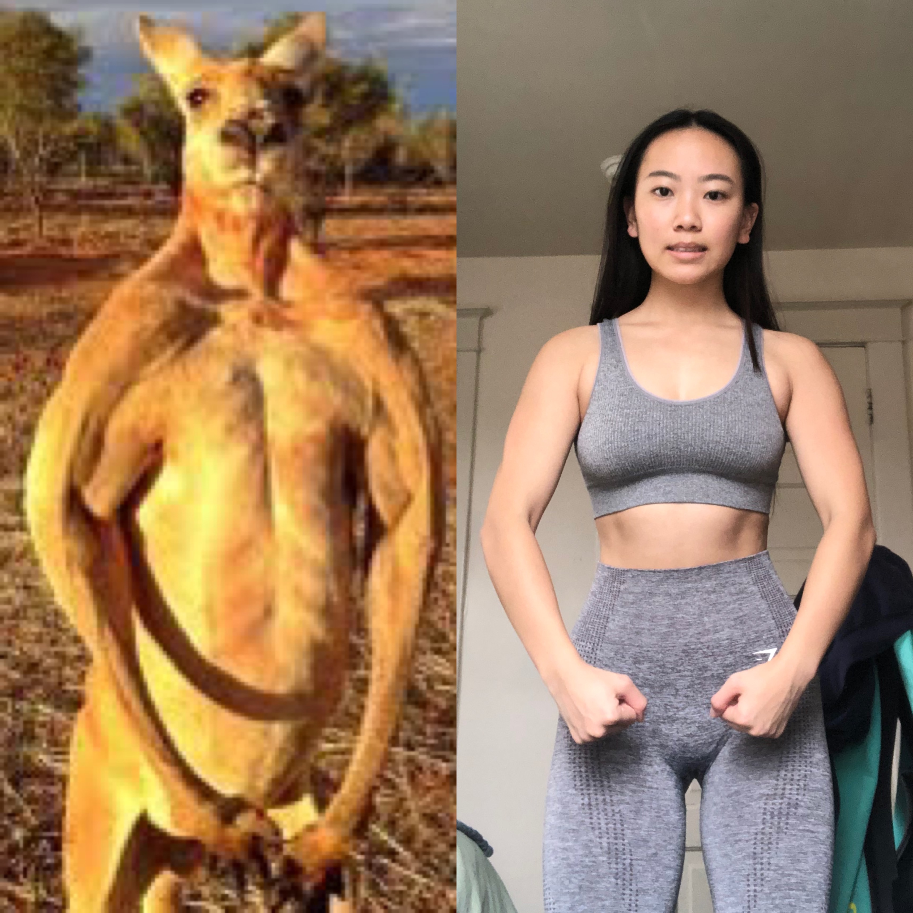

Ah, yes. The age old gym question: how do you actually motivate yourself to start going to the gym?
And then the age old gym answer: Just go! Going to the gym consistently isn't just about motivation -- you need discipline as well.
I'll admit that I don't wake up every day wanting to go to the gym. But I go anyways, and after I'm done with my session I'm always glad I had pushed myself to go. At the same time, be kind to yourself if you miss a day. Results don't happen overnight, but they also won't disappear overnight either!
Here are some things I've found that help with motivating/disciplining me to go to the gym:
Having a gym buddy keeps both of you in check with going to the gym. It's also great for moral support!
  Never underestimate the importance of wearing something you look and feel good in to the gym! I find that wearing a cute workout set makes me excited to go to the gym and do my thing. Whatever looking and feeling good means to you, pursue that! I currently wear a lot of things from Gymshark (not surprising). If you're lifting heavy, I would also recommend wearing some nice flat-soled, high top shoes on leg days, since these will help you stay more "connected" to the ground to stabilize your movements and support your ankles. I currently wear high-top Converse. Some other popular shoes currently are Nike Blazers and high-top Vans.
 

Set goals for yourself, and plan out what you're going to do at the gym before you go so you don't get anxious when you're there
What do you do after a workout? Make sure you get your protein in.
 